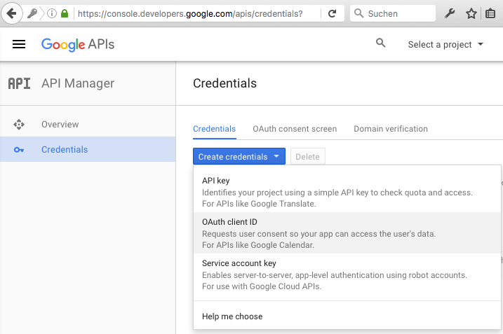
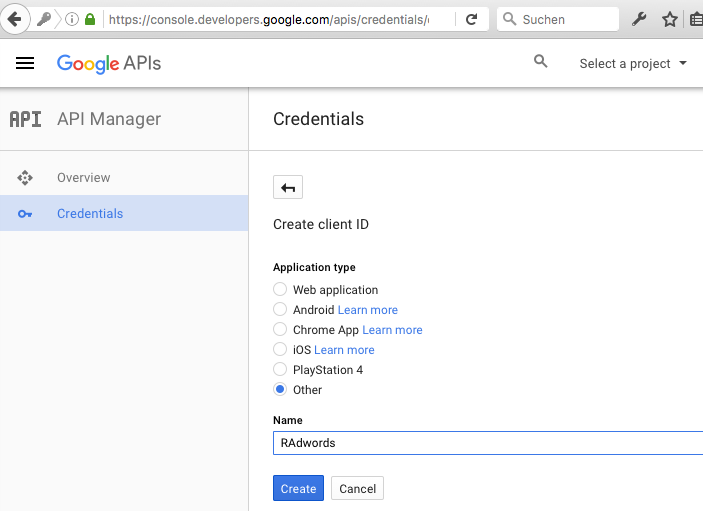
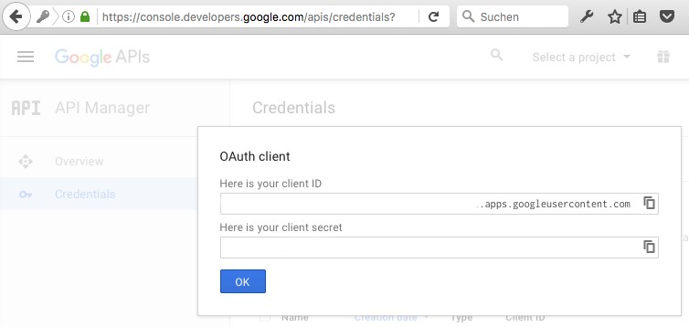

Requirements
In order to access the AdWords API you have to meet the following requirements:
- Valid Google API project (client ID, client secret)
- Valid AdWords MCC (my client center) account
- Valid AdWords API Developer Token
- Do NOT use an Adwords Testaccount!
Missing one of the above mentioned items you cannot access the AdWords API.
We recommend to use the same email (user account) for the Google API project and the AdWords MCC.
Google API Project
Set up a Google API project for native apps. The Google API project provides a Client Id and Client Secret which is necessary for the authentication.
-
Create credentials
Click Credentials > Create Credentials > OAuth client ID

-
Select Application Type: Other

-
Copy client ID and client secret

Adwords MCC
Moreover you need to set up an AdWords My Client Center. A single AdWords account is not sufficient.
AdWords Developer Token
Once your AdWords MCC is set up you have to apply for an AdWords developer token. You can do this within the settings of the AdWords MCC account.
Navigate to:
Adwords MCC > Account settings > AdWords API Center > Developer Token Details > Apply for Standard Access
Important: An AdWords API Test Account will not allow you to load data. You need to have Basic access level at least.